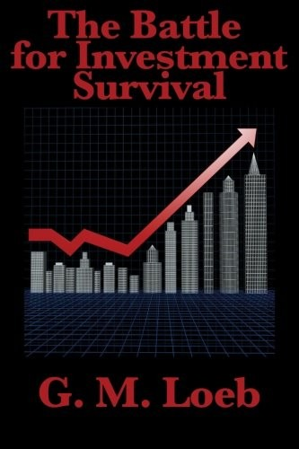

杰拉尔德·洛布1899年出生于旧金山，父亲所罗门·洛布是新奥尔良的葡萄酒商人。1921年，洛布从旧金山一家证券行的债券部门起步，1924年转往纽约加入E.F. Hutton & Co.，此后在这家公司干了近四十年，1962年公司改制为股份制时出任副董事长。他最为人称道的一段往事，是在1929年大崩盘之前，凭对市场情绪的判断提前抛售了手中股票、逐步清空仓位，躲过了那场让无数投资者血本无归的暴跌。这段经历后来被他写进了1935年出版的《投资存亡战》（The Battle for Investment Survival）——与本杰明·格雷厄姆的《证券分析》几乎同时问世，却给出了截然相反的答案。
格雷厄姆通过分散持仓、计算内在价值来求稳；洛布却认为，持有太多、太杂、无法持续跟踪的股票本身就是风险。他主张把资金集中在少数经过验证、价格和成交量都显示市场认可的领先公司上，用一句流传至今的话概括——"把所有鸡蛋放进一个篮子，然后死死看住这个篮子"（put all your eggs in one basket, and watch the basket）。这不是买入后不动：洛布把现金视为合法仓位，强调迅速止损、让盈利头寸继续运行，并区分"判断正确"与"赚到钱"。一家公司长期也许很好，但若买价、时机或持有方式错误，投资者仍可能在证明自己正确之前失去资本。这个立场使本书更接近交易纪律而不是传统的长期价值投资。
最可执行的工具是"single ruling reason"（唯一主导理由）：买入前写下这笔交易最核心的一条依据，可能是盈利拐点、新产品、管理层变化或价格趋势；理由失效就离场，交易结束后再核对原判断。把理由写下来，是为了阻止亏损后临时发明新故事。洛布也要求记录观察、错误和退出决定，用复盘区分运气与能力。1935年初版由33篇短章组成；1965年扩充版又收入45篇取材于历年专栏的文章，篇幅几乎翻倍。因此不同版本的目录和页数差别很大，后半部也比前半部更像主题松散的文集。
《投资存亡战》还讨论通胀、税负、商品、证券经纪人的利益冲突和上市公司管理层质量。洛布把通胀视为现金购买力的敌人，却不因此要求始终满仓；名义资本能否保存，要连同购买力、交易成本和税后结果一起计算。他要求投资者亲自承担判断责任，不把经纪人的频繁建议误当成与客户利益一致的研究。这些章节带有大萧条后美国市场的制度印记，也让"生存"不只是止损口号，而是对资金、信息来源和激励结构的全面盘点。本书在大萧条时期售出逾二十万册，后来有上海财经大学出版社等中文版本。它的历史影响不等于每条建议都适合今天：集中持仓加止损依赖交易流动性，会产生税费和频繁误判；价格趋势也不能替代对企业价值与资本结构的研究。书的长处是把"先活下来"写成行为约束，弱点则是章节重复、证据多来自作者个人经验，缺少现代组合理论式的系统检验。洛布后来资助设立杰拉尔德·洛布奖，用于表彰财经新闻报道。把本书与《证券分析》并读，能看见同一次崩盘催生的两条路线：一条靠估值和分散化抵御错误，另一条靠集中、现金与快速纠错保存行动能力。